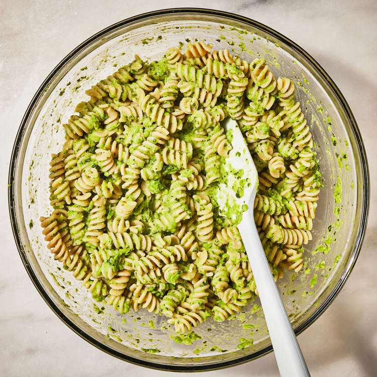

Home
Creamy Green Pea Pesto Pasta

Description
Mint and peas are a natural pairing in this creamy pasta dish. It works
well as a vegetarian main dish or can be divided into smaller portions as
a side dish. If you have pine nuts on hand, sprinkle them over the top for
a little crunch. If you like your pesto to be totally smooth, process it a
little longer, scraping down the sides of the bowl as you go. Parmesan
cheese grated fresh with a microplane grater will give you the best
results.
Ingredients
- 12 ounces whole-wheat fusilli
- 1 ½ cups finely grated Parmesan cheese, divided
- 3 teaspoons grated lemon zest, divided
- 2 cups frozen peas, thawed
- 1 ½ cups loosely packed fresh mint leaves
- 6 tablespoons extra-virgin olive oil
- 3 tablespoons lemon juice
- ½ teaspoon salt
Steps
-
Bring a large pot of water to a boil over high heat. Add pasta; cook
according to package directions, until al dente. Reserve 3/4 cup cooking
water. Drain the pasta; rinse under cold water. Transfer to a large
bowl.
-
Add 1/2 cup Parmesan and 1 teaspoon lemon zest to a small bowl. With
clean hands, rub the Parmesan and zest together until fragrant, about 30
seconds.
-
Place peas, mint, oil, lemon juice, salt and the remaining 1 cup
Parmesan and 2 teaspoons lemon zest in a food processor. Process until
mostly smooth, 20 to 30 seconds.
-
Add the pesto and the reserved 3/4 cup cooking water to the pasta; toss
until coated and creamy. Divide among 6 bowls; top with the
lemon-Parmesan mixture.